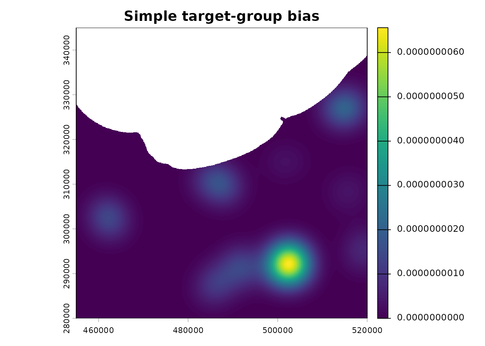
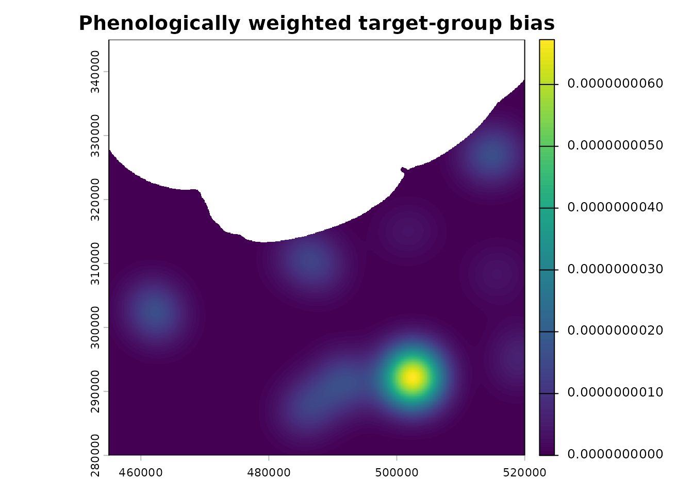
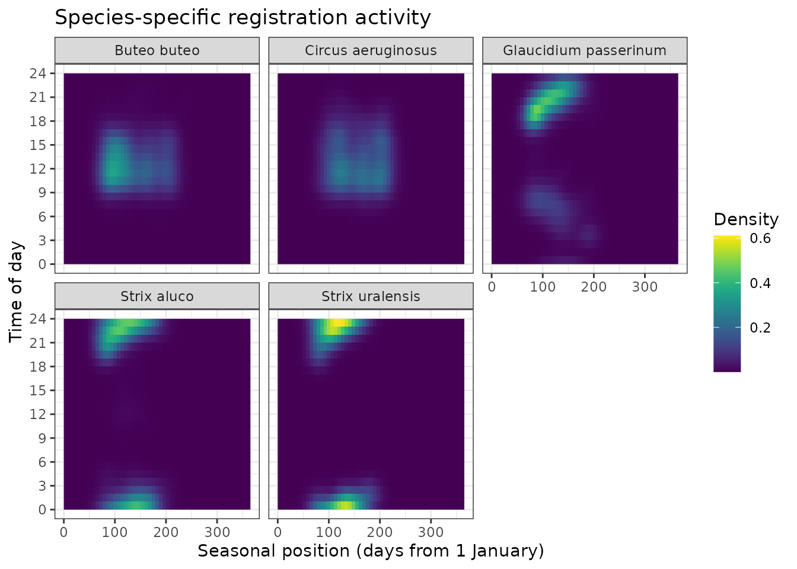
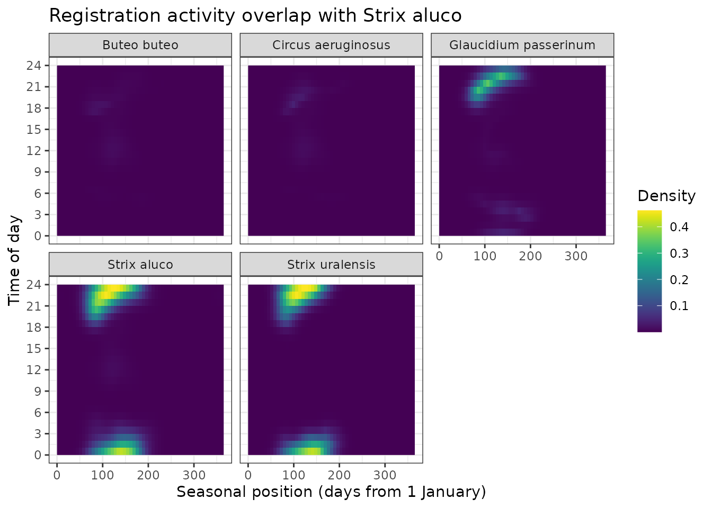

Overview
sdmhelpers provides helper functions for species
distribution modelling (SDM) workflows, with particular emphasis on
presence-background models implemented with maxnet. The
package contains tools for constructing sampling-bias surfaces from
target-group records, weighting target-group observations by seasonal or
combined seasonal and diel overlap, selecting complete spatial folds for
independent testing, screening environmental predictors, and evaluating
predictions using the True Skill Statistic (TSS).
Presence-only SDMs are sensitive to differences between the sampling
process that generated species observations and the process used to
select background locations. A commonly used approach is therefore to
select or weight background data so that they reflect similar sampling
bias to the presence data (Phillips et al. 2009; Elith et al. 2011).
sdmhelpers extends this idea by allowing records from a
target group to contribute unequally according to their temporal
similarity to the focal species.
The examples below use datasets distributed with
sdmhelpers. They are reduced or pseudonymised datasets
intended for demonstrating package functionality, not for biological
inference.
sdmhelpers was developed as part of the project
HiQBioDiv: High-resolution quantification of biodiversity for
conservation and management, funded by the Latvian Council of
Science (Ref. No. VPP-VARAM-DABA-2024/1-0002).
The development version can be installed from GitHub with:
# install.packages("remotes")
remotes::install_github("aavotins/sdmhelpers")Packages used in this vignette:
library(sdmhelpers)
library(sf)
#> Linking to GEOS 3.12.1, GDAL 3.8.4, PROJ 9.4.0; sf_use_s2() is TRUE
library(ggplot2)
library(terra)
#> terra 1.9.50
library(maxnet)
library(SDMtune)
#>
#> _____ ____ __ ___ __
#> / ___/ / __ \ / |/ // /_ __ __ ____ ___
#> \__ \ / / / // /|_/ // __// / / // __ \ / _ \
#> ___/ // /_/ // / / // /_ / /_/ // / / // __/
#> /____//_____//_/ /_/ \__/ \__,_//_/ /_/ \___/ version 1.3.3
#>
#> To cite this package in publications type: citation("SDMtune").
#>
#> Attaching package: 'SDMtune'
#> The following object is masked from 'package:maxnet':
#>
#> thresholds
library(ENMeval)
#> This is ENMeval version 2.0.6.
#> For worked examples, please consult the vignette: <https://jamiemkass.github.io/ENMeval/articles/ENMeval-2.0-vignette.html>.Example data
Several example datasets are included in the package. The examples in this vignette use bird and bryophyte observations, spatial presence and background locations, spatial blocks, a 100-m grid, known habitat-inventory dates, and an example environmental raster.
data("aves_small", package = "sdmhelpers")
data("bryophyta_one", package = "sdmhelpers")
data("habitat_inventories", package = "sdmhelpers")
data("points100", package = "sdmhelpers")
data("example_grid", package = "sdmhelpers")
example_grid <- terra::unwrap(example_grid)
data("example_presences", package = "sdmhelpers")
data("example_background", package = "sdmhelpers")
data("example_independent_blocks", package = "sdmhelpers")
data("egv_names", package = "sdmhelpers")The environmental raster used later in the vignette is stored in
inst/extdata.
egv_file <- system.file("extdata",
"example_egv.tif",
package = "sdmhelpers")Simple target-group bias surface
Target-group background sampling uses observations of taxa that are expected to have been collected through a sampling process similar to that of the focal species. If sampling effort is spatially biased, drawing background data from the same biased sampling domain can reduce the contrast between presence and background sampling processes (Phillips et al. 2009).
Here, one species from aves_small is treated as the
focal species while all species form the target group. For this example,
the focal species is chosen programmatically as the species with the
largest number of records so that the example does not depend on a
particular species name.
target_species <- names(
sort(table(aves_small$species), decreasing = TRUE)
)[1]
target_species
#> [1] "Strix aluco"
target_group <- aves_smallMultiple observations can occur in the same 100-m grid cell. For the
spatial bias surface, records are therefore counted by grid cell and
supplied to kde_surface() as weights.
tg_counts <- aggregate(
list(n_records = rep(1, nrow(target_group))),
by = list(id100 = target_group$id100),
FUN = sum
)
idx <- match(tg_counts$id100, points100$id)
keep <- !is.na(idx)
tg_points <- points100[idx[keep], ]
tg_points$n_records <- tg_counts$n_records[keep]
tg_points
#> Simple feature collection with 1065 features and 7 fields
#> Geometry type: POINT
#> Dimension: XY
#> Bounding box: xmin: 459750 ymin: 285250 xmax: 519650 ymax: 329550
#> Projected CRS: LKS-92 / Latvia TM
#> First 10 features:
#> id yes tks50km rinda300 ID1km rinda500
#> 1714235 100mX4597Y3042 1 4221 385184 1kmX459Y304 236094
#> 1714987 100mX4598Y3044 1 4221 386590 1kmX459Y304 236995
#> 1719476 100mX4604Y3043 1 4221 386592 1kmX460Y304 236096
#> 1719478 100mX4604Y3045 1 4221 386592 1kmX460Y304 236996
#> 1723202 100mX4609Y3038 1 4221 383781 1kmX460Y303 235197
#> 1723204 100mX4609Y3040 1 4221 385188 1kmX460Y304 236097
#> 1723921 100mX4610Y3013 1 4221 372533 1kmX461Y301 230697
#> 1723922 100mX4610Y3014 1 4221 372533 1kmX461Y301 231597
#> 1723926 100mX4610Y3018 1 4221 373936 1kmX461Y301 231597
#> 1723950 100mX4610Y3042 1 4221 385189 1kmX461Y304 236097
#> geom n_records
#> 1714235 POINT (459750 304250) 1
#> 1714987 POINT (459850 304450) 1
#> 1719476 POINT (460450 304350) 1
#> 1719478 POINT (460450 304550) 1
#> 1723202 POINT (460950 303850) 1
#> 1723204 POINT (460950 304050) 2
#> 1723921 POINT (461050 301350) 1
#> 1723922 POINT (461050 301450) 3
#> 1723926 POINT (461050 301850) 2
#> 1723950 POINT (461050 304250) 1kde_surface() first bins point weights to the reference
raster and then applies Gaussian smoothing. This makes the calculation
practical for large rasters and large bandwidths. Kernel density
estimation in general is described by Silverman
(1986).
The example grid uses EPSG:3059, whose map units are metres, so
sigma = 3000 corresponds to a Gaussian bandwidth of 3 km.
With normalize = "pdf", the resulting surface is normalised
to integrate to one and represents a probability-density-scaled surface
of the spatial distribution of target-group records. It can therefore be
used as a relative proxy sampling-bias surface for background
sampling.
simple_bias <- kde_surface(
x = tg_points,
weight_field = "n_records",
sigma = 3000,
ref = example_grid,
normalize = "pdf",
mask = TRUE
)
options(scipen = 999)
terra::plot(simple_bias, main = "Simple target-group bias")
Unweighted target-group sampling-bias surface.
This simple approach assumes that every target-group record is equally informative about the sampling process affecting the focal species. The following sections relax that assumption.
Phenologically weighted target-group
Species observed by the same people or recording scheme may nevertheless have different seasonal detectability, availability, or both. A species recorded mainly in winter, for example, may provide little information about sampling effort relevant to a species recorded mainly during late spring.
phenology_overlap_weights() estimates overlap between species’ day-of-year distributions using overlapping::overlap() (Pastore and Calcagnì 2019). This approach provides compatibility with conventional kernel-density overlap estimation (Pastore 2018). However, because day of year is treated as a linear variable, observations near the end and beginning of the calendar year are not considered adjacent. For species with observation periods spanning this boundary, torus_overlap_many() provides an alternative based on circular kernel-density estimation with constant (e.g. midday) value for the time of day.
First, day of year is added to the bird records.
bird_dates <- aves_small
bird_dates$DoY <- as.POSIXlt(bird_dates$date)$yday + 1L
target_code <- bird_dates$code[
match(target_species, bird_dates$species)
]
target_code
#> [1] "STRALU"We then estimate phenological overlap between the focal species (synonymous to target-species) and every species in the target-group.
phenology_weights <- phenology_overlap_weights(
target = bird_dates,
group = bird_dates,
target_code = target_code,
target_id = "code",
group_id = "code",
target_doy = "DoY",
group_doy = "DoY",
type = "2",
min_n = 5
)
phenology_weights[
order(phenology_weights$weight, decreasing = TRUE),
]
#> code overlap weight
#> STRALU STRALU 1.0000000 0.2659064
#> GLAPAS GLAPAS 0.8256341 0.2195414
#> STRURA STRURA 0.8053464 0.2141467
#> BUTBUT BUTBUT 0.6383454 0.1697401
#> CIRAER CIRAER 0.4913965 0.1306654The returned weight values sum to one across comparison
species with valid overlap estimates. Here, each target-group
observation receives the weight of its species. Records are then summed
within 100-m cells before KDE smoothing.
target_group_p <- merge(
target_group,
phenology_weights[, c("code", "weight")],
by = "code",
all.x = TRUE
)
target_group_p <- target_group_p[
is.finite(target_group_p$weight) &
!is.na(target_group_p$id100),
]
tg_weighted <- aggregate(
list(weight = target_group_p$weight),
by = list(id100 = target_group_p$id100),
FUN = sum
)
idx <- match(tg_weighted$id100, points100$id)
keep <- !is.na(idx)
tg_points_weighted <- points100[idx[keep], ]
tg_points_weighted$weight <- tg_weighted$weight[keep]
phenology_bias <- kde_surface(
x = tg_points_weighted,
weight_field = "weight",
sigma = 3000,
ref = example_grid,
normalize = "pdf",
mask = TRUE
)
options(scipen = 999)
terra::plot(
phenology_bias,
main = "Phenologically weighted target-group bias"
)
Phenologically weighted target-group sampling-bias surface.
The weighted surface should be interpreted as a relative sampling-bias surface, not as an estimate of species occurrence probability. Its purpose is to describe where observations relevant to the focal species’ seasonal sampling process were more or less likely to have been collected.
Target-group weighting by seasonal and diel overlap
For taxa whose detectability varies both seasonally and through the
day, seasonal overlap alone may be insufficient.
torus_overlap_many() represents season and time of day as
two circular dimensions and estimates overlap on a two-dimensional
torus. Circular treatment is important because both annual and daily
cycles wrap around their endpoints; see Mardia
and Jupp (1999) for directional
statistics and Ridout and Linkie (2009) for overlap estimation of diel
activity patterns.
The bird dataset contains date-time observations. For this introductory example, we select the focal species with the largest number of valid date-time records and compare its seasonal and diel observation distributions with those of every species in the target group (including the focal species itself).
comparison_data <- aves_small[
!is.na(aves_small$date_time),
,
drop = FALSE
]
target_species_torus <- names(
sort(table(comparison_data$species), decreasing = TRUE)
)[1]
reference_data <- comparison_data[
comparison_data$species == target_species_torus,
,
drop = FALSE
]
reference_data$obs_date <- as.Date(reference_data$date_time)
reference_data$obs_time <- hms::as_hms(reference_data$date_time)
comparison_data$obs_date <- as.Date(comparison_data$date_time)
comparison_data$obs_time <- hms::as_hms(comparison_data$date_time)For speed, the example uses a coarser evaluation grid than would often be used in a final analysis.
torus_result <- torus_overlap_many(
reference_data = reference_data,
comparison_data = comparison_data,
comparison_group_col = "species",
reference_date_col = "obs_date",
reference_time_col = "obs_time",
comparison_date_col = "obs_date",
comparison_time_col = "obs_time",
reference_name = target_species_torus,
season_bw_days = 14,
daily_bw_hours = 1,
date_resolution_days = 7,
time_resolution_minutes = 60,
min_n = 5,
return_density = FALSE
)
torus_overlap <- torus_result$overlap
torus_overlap <- torus_overlap[
order(torus_overlap$overlap, decreasing = TRUE),
]
head(torus_overlap, 10)
#> reference comparison n_reference n_comparison overlap status
#> 4 Strix aluco Strix aluco 3004 3004 1.00000000 OK
#> 5 Strix aluco Strix uralensis 3004 137 0.86931899 OK
#> 3 Strix aluco Glaucidium passerinum 3004 330 0.41910228 OK
#> 2 Strix aluco Circus aeruginosus 3004 671 0.04184691 OK
#> 1 Strix aluco Buteo buteo 3004 2095 0.03477199 OKThe overlap coefficient ranges from zero to one for normalised densities. A large value indicates that a comparison species has a seasonal-diel observation distribution similar to the focal species.
To use these coefficients as relative species weights in a target group, they can be normalised across comparison species.
ok <- is.finite(torus_overlap$overlap)
torus_overlap$weight <- NA_real_
torus_overlap$weight[ok] <-
torus_overlap$overlap[ok] /
sum(torus_overlap$overlap[ok])
head(
torus_overlap[
order(torus_overlap$weight, decreasing = TRUE),
c("comparison", "overlap", "weight")
],
10
)
#> comparison overlap weight
#> 4 Strix aluco 1.00000000 0.42282580
#> 5 Strix uralensis 0.86931899 0.36757050
#> 3 Glaucidium passerinum 0.41910228 0.17720726
#> 2 Circus aeruginosus 0.04184691 0.01769395
#> 1 Buteo buteo 0.03477199 0.01470250These weights can be joined back to the individual observations and
passed to kde_surface() in exactly the same way as the
phenological weights above.
The overlap can also be visualised, when setting
return_density = TRUE
torus_result <- torus_overlap_many(
reference_data = reference_data,
comparison_data = comparison_data,
comparison_group_col = "species",
reference_date_col = "obs_date",
reference_time_col = "obs_time",
comparison_date_col = "obs_date",
comparison_time_col = "obs_time",
reference_name = target_species_torus,
season_bw_days = 14,
daily_bw_hours = 1,
date_resolution_days = 7,
time_resolution_minutes = 60,
min_n = 5,
return_density = TRUE
)
ggplot(torus_result$density,
aes(
x = seasonal_position_days,
y = decimal_hour,
fill = comparison_density
)
) +
geom_raster() +
facet_wrap(~ comparison) +
scale_y_continuous(breaks = seq(0, 24, by = 3)) +
viridis::scale_fill_viridis() +
labs(
x = "Seasonal position (days from 1 January)",
y = "Time of day",
fill = "Density",
title = "Species-specific registration activity") +
theme_bw()
ggplot(torus_result$density,
aes(
x = seasonal_position_days,
y = decimal_hour,
fill = shared_density
)
) +
geom_raster() +
facet_wrap(~ comparison) +
scale_y_continuous(breaks = seq(0, 24, by = 3)) +
viridis::scale_fill_viridis() +
labs(x = "Seasonal position (days from 1 January)",
y = "Time of day",
fill = "Density",
title = paste0(
"Registration activity overlap with ",
target_species_torus
)
) +
theme_bw()
Known inventory dates
Sometimes the dates of a survey or habitat inventory are known, while
the species itself was not necessarily recorded during that survey. In
this case, doy_kde_weights() can estimate how closely each
inventory date corresponds to the seasonal registration-activity
distribution of a target species.
The function estimates a circular approximation to a day-of-year KDE from the reference dates and evaluates that density at another set of dates. Circularity is approximated by periodically extending the reference observations across the seasonal boundary, which reduces boundary effects between observations near the end and beginning of the year. Bandwidth controls the degree of smoothing, as in conventional KDE (Silverman 1986).
The example below uses one bryophyte species considered to be an old-growth forest specialist and therefore specifically searched for during habitat inventories.
bryophyta_species <- names(
sort(table(bryophyta_one$species), decreasing = TRUE)
)[1]
reference_dates <- bryophyta_one$date[
bryophyta_one$species == bryophyta_species &
!is.na(bryophyta_one$date)
]
inventory_keep <- !is.na(habitat_inventories$date)
inventory_weights <- doy_kde_weights(
A_dates = reference_dates,
B_dates = habitat_inventories$date[inventory_keep],
scale = "percentile_A",
bw = "nrd0"
)
weighted_inventories <- habitat_inventories[inventory_keep, ]
weighted_inventories$phenology_weight <- inventory_weights$weightsWith scale = "percentile_A", weights describe how high
the estimated reference density is relative to density values across the
seasonal cycle. They are relative phenological correspondence scores
rather than occurrence probabilities.
aggregate(
phenology_weight ~ habitat_type,
data = weighted_inventories,
FUN = mean
)
#> habitat_type phenology_weight
#> 1 dune 0.7492080
#> 2 forest 0.7281414
#> 3 freshwater 0.6848989
#> 4 grassland 0.6864115
#> 5 heather 0.0630137
#> 6 mire 0.6161949The estimated seasonal reference curve can also be inspected directly.
plot(
inventory_weights$density$x,
inventory_weights$density$y,
type = "l",
xlab = "Day of year",
ylab = "Estimated reference density"
)Estimated seasonal registration-activity curve used for weighting known inventory dates.
Selecting an independent testing set
Random train-test splitting can give overly optimistic estimates of predictive performance when nearby observations are spatially dependent. Spatially structured resampling is therefore generally preferable when the intended prediction involves geographic transfer (Roberts et al. 2017).
sdmhelpers does not define the spatial blocks
themselves. Instead, select_folds_by_quota() and
select_joint_folds() select complete groups from fold
identifiers created elsewhere. Independence therefore comes from the
design of the folds, not from the selection function.
The package contains example presence records, background records, and independent spatial polygons.
pres_sf <- sf::st_as_sf(
example_presences,
coords = c("x", "y"),
crs = 3059
)
bg_sf <- sf::st_as_sf(
example_background,
coords = c("x", "y"),
crs = 3059
)
block_id <- setdiff(
names(example_independent_blocks),
attr(example_independent_blocks, "sf_column")
)[1]
pres_joined <- sf::st_join(
pres_sf,
example_independent_blocks[block_id],
join = sf::st_within,
left = TRUE
)
bg_joined <- sf::st_join(
bg_sf,
example_independent_blocks[block_id],
join = sf::st_within,
left = TRUE
)
pres_folds <- pres_joined[[block_id]]
bg_folds <- bg_joined[[block_id]]When both presences and background should be withheld from the same
spatial blocks, select_joint_folds() is convenient.
independent <- select_joint_folds(
pres_folds = pres_folds,
bg_folds = bg_folds,
target_prop = 0.25,
pres_bounds = c(0.20, 0.30),
bg_bounds = c(0.20, 0.30),
max_tries = 3000,
bg_match_weight = 1,
seed = 1,
print_report = FALSE
)
independent$selected_fold_ids
#> [1] "110" "117" "142" "153" "183" "186" "197" "208" "252" "280" "282" "291"
#> [13] "312" "323" "325" "340" "343" "353" "354" "380" "392" "397" "398" "4"
#> [25] "406" "407" "411" "413" "421" "433" "434" "44" "441" "459" "464" "475"
#> [37] "479" "490" "506" "511" "515" "516" "518" "519" "521" "523" "536" "537"
#> [49] "539" "543" "548" "553" "572" "590" "600" "606" "610" "613" "629" "631"
#> [61] "641" "643" "644" "645" "646" "647" "661" "670" "671" "675" "677" "68"
#> [73] "686" "697" "70" "703" "712" "715" "717" "722" "732" "734" "738" "749"
#> [85] "83" "95" "100" "101" "103" "104" "11" "116" "12" "124" "125" "126"
#> [97] "130" "144" "145" "147" "149" "152" "155" "18" "180" "192" "194" "198"
#> [109] "2" "201" "203" "211" "220" "228" "232" "237" "238" "242" "247" "255"
#> [121] "26" "262" "28" "287" "288" "289" "29" "292" "295" "3" "30" "326"
#> [133] "328" "330" "341" "347" "350" "352" "36" "363" "369" "375" "379" "388"
#> [145] "394" "402" "408" "42" "436" "438" "447" "453" "456" "457" "462" "463"
#> [157] "466" "482" "494" "495" "500" "525" "534" "540" "560" "564" "568" "571"
#> [169] "575" "58" "593" "596" "597" "598" "599" "60" "612" "617" "618" "634"
#> [181] "636" "64" "640" "649" "658" "66" "662" "664" "665" "666" "667" "676"
#> [193] "684" "693" "694" "696" "7" "721" "741" "75" "78" "8" "9" "91"
#> [205] "93" "98"
independent$summary[c(
"n_pres_selected",
"n_bg_selected",
"prop_pres_selected",
"prop_bg_selected"
)]
#> $n_pres_selected
#> 295
#> 694
#>
#> $n_bg_selected
#> 295
#> 9957
#>
#> $prop_pres_selected
#> 295
#> 0.24991
#>
#> $prop_bg_selected
#> 295
#> 0.2499122The returned logical vectors preserve the row order of the input data and can be used directly for subsetting.
pres_test <- example_presences[independent$pres_selected_idx, ]
pres_train <- example_presences[!independent$pres_selected_idx, ]
bg_test <- example_background[independent$bg_selected_idx, ]
bg_train <- example_background[!independent$bg_selected_idx, ]
c(
pres_train = nrow(pres_train),
pres_test = nrow(pres_test),
bg_train = nrow(bg_train),
bg_test = nrow(bg_test)
)
#> pres_train pres_test bg_train bg_test
#> 2084 694 30043 9957If only one type of observation needs to be selected, the simpler
select_folds_by_quota() can be used instead.
presence_only_selection <- select_folds_by_quota(
folds = pres_folds,
target_prop = 0.25,
bounds = c(0.20, 0.30),
seed = 1,
print_report = FALSE
)
presence_only_selection$summary$prop_selected
#> [1] 0.299964Screening predictor variance
Predictors that are constant across all data used for model fitting
cannot provide an estimable environmental response. Low variance within
an individual subset, however, does not necessarily imply that a
predictor is uninformative: for example, a predictor may be constant
among presences but variable among background records.
screen_egv_variance() therefore distinguishes the presence,
background, and combined-data checks and records which checks contribute
to predictor selection.
The example environmental raster contains five ecogeographical variables. The presence and background locations were split spatially into independent training and testing sets in the preceding section.
env <- terra::rast(egv_file)
env
#> class : SpatRaster
#> size : 650, 650, 5 (nrow, ncol, nlyr)
#> resolution : 100, 100 (x, y)
#> extent : 455000, 520000, 280000, 345000 (xmin, xmax, ymin, ymax)
#> coord. ref. : LKS-92 / Latvia TM (EPSG:3059)
#> source : example_egv.tif
#> names : egv_280, egv_293, egv_302, egv_385, egv_400
#> min values : -0.466794, -0.719917, -0.397964, -1.461203, -0.37327
#> max values : 3.70894, 7.054723, 8.359298, 5.206886, 11.300995We first prepare the training and independent-testing datasets
once, using the same environmental predictors.
SDMtune::prepareSWD() removes locations with missing values
in any supplied environmental layer. Many example records fall outside
the raster’s complete-data domain; the counts below show how many
observations remain after extraction. All subsequent checks, fold
assignments, model fitting, and evaluation use these retained
records.
training_set <- SDMtune::prepareSWD(
species = "example_species",
p = pres_train,
a = bg_train,
env = env,
verbose = FALSE
)
#> Warning: ! 2009 locations are NA for some environmental variables and have been
#> discarded
#> Warning: ! 28679 locations are NA for some environmental variables and have been
#> discarded
testing_set <- SDMtune::prepareSWD(
species = "example_species",
p = pres_test,
a = bg_test,
env = env,
verbose = FALSE
)
#> Warning: ! 613 locations are NA for some environmental
#> variables and have been discarded
#> Warning: ! 8890 locations are NA for some environmental variables and have been
#> discarded
c(
training_presences = sum(training_set@pa == 1),
training_background = sum(training_set@pa == 0),
testing_presences = sum(testing_set@pa == 1),
testing_background = sum(testing_set@pa == 0)
)
#> training_presences training_background testing_presences testing_background
#> 75 1364 81 1067For spatial cross-validation, we assign folds after
the environmental-value extraction so that the fold identifiers
correspond exactly to rows in the training SWD object.
ENMeval::get.block() expects longitude-latitude
coordinates; the projected EPSG:3059 coordinates are therefore converted
to EPSG:4326 solely for constructing the folds. This does not change the
predictor values stored in training_set.
as_lonlat <- function(coords) {
pts <- sf::st_as_sf(
coords,
coords = c("X", "Y"),
crs = 3059
)
ll <- sf::st_coordinates(sf::st_transform(pts, 4326))
data.frame(lon = ll[, 1], lat = ll[, 2])
}
pres_idx <- training_set@pa == 1
bg_idx <- training_set@pa == 0
block_folds <- ENMeval::get.block(
occs = as_lonlat(training_set@coords[pres_idx, , drop = FALSE]),
bg = as_lonlat(training_set@coords[bg_idx, , drop = FALSE])
)The screen checks presences, backgrounds, and their combination both
across all training records and within each cross-validation training
partition. Because bg_folds is supplied, the corresponding
held-out background fold is excluded as well as the presence fold.
Presence-only checks are retained as diagnostics but do not
automatically remove predictors. The independent test set can also be
diagnosed, while the default leakage-safe settings ensure that its
values do not affect keep or remove.
variance_screen <- screen_egv_variance(
train = training_set,
test = testing_set,
occ_folds = block_folds$occs.grp,
bg_folds = block_folds$bg.grp,
env = env,
env_sample_n = 5000L,
seed = 1L,
sd_tol = 0,
check_presences = TRUE,
check_background = TRUE,
check_combined = TRUE,
presence_affects_selection = FALSE,
include_test_bg = FALSE,
check_test = TRUE,
test_affects_selection = FALSE,
verbose = FALSE
)
variance_screen$keep
#> [1] "egv_280" "egv_293" "egv_302" "egv_385" "egv_400"
variance_screen$remove
#> character(0)A predictor is removed only if it fails at least one check marked
used_for_selection = TRUE. A failed diagnostic-only check
remains visible in diagnostics but does not affect
predictor selection. Even though this example calculates diagnostic-only
checks on the independent test, their results must not be used to revise
the chosen predictor set or model. In a final analysis, it is preferable
not to inspect the held-out test diagnostics until the model
specification has been fixed.
head(variance_screen$diagnostics)
#> check subset data_source group fold used_for_selection variable
#> 1 training all training presences <NA> FALSE egv_280
#> 2 training all training presences <NA> FALSE egv_293
#> 3 training all training presences <NA> FALSE egv_302
#> 4 training all training presences <NA> FALSE egv_385
#> 5 training all training presences <NA> FALSE egv_400
#> 6 training all training background <NA> TRUE egv_280
#> n_finite sd failed reason
#> 1 75 1.5562103 FALSE passed
#> 2 75 1.8404706 FALSE passed
#> 3 75 1.1651248 FALSE passed
#> 4 75 0.4201842 FALSE passed
#> 5 75 0.4363026 FALSE passed
#> 6 1364 1.5236134 FALSE passed
subset(
variance_screen$diagnostics,
failed & !used_for_selection,
select = c(check, subset, group, variable, sd, reason)
)
#> [1] check subset group variable sd reason
#> <0 rows> (or 0-length row.names)The random environmental-domain check samples raster cells
independently of the observed training background locations. It does
not resample the background records already contained
in training_set.
A common predictor set screened across all CV partitions is convenient for this introductory example. For an unbiased assessment of a pipeline that selects predictors anew, that selection must instead be performed separately inside each CV training partition.
subset(
variance_screen$diagnostics,
check == "cv_training",
select = c(
check, subset, group, fold,
variable, sd, failed, used_for_selection
)
)
#> check subset group fold variable sd failed
#> 16 cv_training held_out_fold_2 presences 2 egv_280 1.5974080 FALSE
#> 17 cv_training held_out_fold_2 presences 2 egv_293 1.7213387 FALSE
#> 18 cv_training held_out_fold_2 presences 2 egv_302 1.1385672 FALSE
#> 19 cv_training held_out_fold_2 presences 2 egv_385 0.3446358 FALSE
#> 20 cv_training held_out_fold_2 presences 2 egv_400 0.1296358 FALSE
#> 21 cv_training held_out_fold_2 background 2 egv_280 1.5930103 FALSE
#> 22 cv_training held_out_fold_2 background 2 egv_293 1.6918404 FALSE
#> 23 cv_training held_out_fold_2 background 2 egv_302 1.5554488 FALSE
#> 24 cv_training held_out_fold_2 background 2 egv_385 0.4753539 FALSE
#> 25 cv_training held_out_fold_2 background 2 egv_400 0.4171508 FALSE
#> 26 cv_training held_out_fold_2 combined 2 egv_280 1.6497089 FALSE
#> 27 cv_training held_out_fold_2 combined 2 egv_293 1.8766848 FALSE
#> 28 cv_training held_out_fold_2 combined 2 egv_302 1.5449395 FALSE
#> 29 cv_training held_out_fold_2 combined 2 egv_385 0.4672986 FALSE
#> 30 cv_training held_out_fold_2 combined 2 egv_400 0.4049559 FALSE
#> 31 cv_training held_out_fold_4 presences 4 egv_280 1.6395785 FALSE
#> 32 cv_training held_out_fold_4 presences 4 egv_293 1.8506224 FALSE
#> 33 cv_training held_out_fold_4 presences 4 egv_302 1.1297366 FALSE
#> 34 cv_training held_out_fold_4 presences 4 egv_385 0.4651644 FALSE
#> 35 cv_training held_out_fold_4 presences 4 egv_400 0.4948771 FALSE
#> 36 cv_training held_out_fold_4 background 4 egv_280 1.5366295 FALSE
#> 37 cv_training held_out_fold_4 background 4 egv_293 1.6757226 FALSE
#> 38 cv_training held_out_fold_4 background 4 egv_302 1.5804242 FALSE
#> 39 cv_training held_out_fold_4 background 4 egv_385 0.8740921 FALSE
#> 40 cv_training held_out_fold_4 background 4 egv_400 0.9401085 FALSE
#> 41 cv_training held_out_fold_4 combined 4 egv_280 1.5906969 FALSE
#> 42 cv_training held_out_fold_4 combined 4 egv_293 1.8192609 FALSE
#> 43 cv_training held_out_fold_4 combined 4 egv_302 1.5794229 FALSE
#> 44 cv_training held_out_fold_4 combined 4 egv_385 0.8570493 FALSE
#> 45 cv_training held_out_fold_4 combined 4 egv_400 0.9198140 FALSE
#> 46 cv_training held_out_fold_3 presences 3 egv_280 1.5176560 FALSE
#> 47 cv_training held_out_fold_3 presences 3 egv_293 1.7655457 FALSE
#> 48 cv_training held_out_fold_3 presences 3 egv_302 1.2211444 FALSE
#> 49 cv_training held_out_fold_3 presences 3 egv_385 0.3984288 FALSE
#> 50 cv_training held_out_fold_3 presences 3 egv_400 0.4954987 FALSE
#> 51 cv_training held_out_fold_3 background 3 egv_280 1.4932623 FALSE
#> 52 cv_training held_out_fold_3 background 3 egv_293 1.5232976 FALSE
#> 53 cv_training held_out_fold_3 background 3 egv_302 1.5333896 FALSE
#> 54 cv_training held_out_fold_3 background 3 egv_385 0.7893809 FALSE
#> 55 cv_training held_out_fold_3 background 3 egv_400 0.8197605 FALSE
#> 56 cv_training held_out_fold_3 combined 3 egv_280 1.5475879 FALSE
#> 57 cv_training held_out_fold_3 combined 3 egv_293 1.6529372 FALSE
#> 58 cv_training held_out_fold_3 combined 3 egv_302 1.5358597 FALSE
#> 59 cv_training held_out_fold_3 combined 3 egv_385 0.7766520 FALSE
#> 60 cv_training held_out_fold_3 combined 3 egv_400 0.8083519 FALSE
#> 61 cv_training held_out_fold_1 presences 1 egv_280 1.4495707 FALSE
#> 62 cv_training held_out_fold_1 presences 1 egv_293 1.9947205 FALSE
#> 63 cv_training held_out_fold_1 presences 1 egv_302 1.1715437 FALSE
#> 64 cv_training held_out_fold_1 presences 1 egv_385 0.4494924 FALSE
#> 65 cv_training held_out_fold_1 presences 1 egv_400 0.4938591 FALSE
#> 66 cv_training held_out_fold_1 background 1 egv_280 1.4944325 FALSE
#> 67 cv_training held_out_fold_1 background 1 egv_293 1.5744318 FALSE
#> 68 cv_training held_out_fold_1 background 1 egv_302 1.5523231 FALSE
#> 69 cv_training held_out_fold_1 background 1 egv_385 0.7867514 FALSE
#> 70 cv_training held_out_fold_1 background 1 egv_400 0.8016187 FALSE
#> 71 cv_training held_out_fold_1 combined 1 egv_280 1.5491069 FALSE
#> 72 cv_training held_out_fold_1 combined 1 egv_293 1.7091390 FALSE
#> 73 cv_training held_out_fold_1 combined 1 egv_302 1.5552666 FALSE
#> 74 cv_training held_out_fold_1 combined 1 egv_385 0.7753450 FALSE
#> 75 cv_training held_out_fold_1 combined 1 egv_400 0.7909909 FALSE
#> used_for_selection
#> 16 FALSE
#> 17 FALSE
#> 18 FALSE
#> 19 FALSE
#> 20 FALSE
#> 21 TRUE
#> 22 TRUE
#> 23 TRUE
#> 24 TRUE
#> 25 TRUE
#> 26 TRUE
#> 27 TRUE
#> 28 TRUE
#> 29 TRUE
#> 30 TRUE
#> 31 FALSE
#> 32 FALSE
#> 33 FALSE
#> 34 FALSE
#> 35 FALSE
#> 36 TRUE
#> 37 TRUE
#> 38 TRUE
#> 39 TRUE
#> 40 TRUE
#> 41 TRUE
#> 42 TRUE
#> 43 TRUE
#> 44 TRUE
#> 45 TRUE
#> 46 FALSE
#> 47 FALSE
#> 48 FALSE
#> 49 FALSE
#> 50 FALSE
#> 51 TRUE
#> 52 TRUE
#> 53 TRUE
#> 54 TRUE
#> 55 TRUE
#> 56 TRUE
#> 57 TRUE
#> 58 TRUE
#> 59 TRUE
#> 60 TRUE
#> 61 FALSE
#> 62 FALSE
#> 63 FALSE
#> 64 FALSE
#> 65 FALSE
#> 66 TRUE
#> 67 TRUE
#> 68 TRUE
#> 69 TRUE
#> 70 TRUE
#> 71 TRUE
#> 72 TRUE
#> 73 TRUE
#> 74 TRUE
#> 75 TRUEFitting a small maxnet model
sdmhelpers supports rather than replaces SDM software.
Here we fit a small illustrative maxnet model to the
training data using only the predictors retained by the variance
screen. This model is for demonstration; the cross-validation
example below can be used to compare alternative feature classes and
regularisation multipliers before fitting a final model.
selected_vars <- variance_screen$keep
if (!length(selected_vars)) {
stop("No predictors passed variance screening.")
}
maxnet_model <- maxnet::maxnet(
p = training_set@pa,
data = training_set@data[, selected_vars, drop = FALSE],
addsamplestobackground = TRUE
)Following the conventional Maxent approach, presence locations not
already represented in the background are additionally included as
background samples during model fitting. This behaviour is enabled by
addsamplestobackground = TRUE, which is also the default in
maxnet.
We do not separately call SDMtune::addSamplesToBg()
because maxnet handles this operation internally.
Consequently, the original training_set object remains
unchanged, and its presence and background records can be used
consistently for subsequent evaluation and cross-validation.
Importantly, this operation uses only the training data. Independent testing presences and background records remain withheld from model fitting.
Evaluating models with TSS
The true skill statistic (TSS) is defined as
\[ \mathrm{TSS} = \mathrm{sensitivity} + \mathrm{specificity} - 1. \]
max_tss() evaluates candidate thresholds and returns the
threshold that maximizes TSS, together with sensitivity and specificity.
For presence-background data, background locations are not confirmed
absences; thus the reported specificity is the proportion of background
records classified as negative, and TSS should be interpreted as
presence-background discrimination rather than classification accuracy
against known absences (Allouche et al. 2006).
Critically, selecting a threshold using independent-test predictions and then reporting TSS on that same test set would yield a test-optimized estimate. Here we select the threshold using training predictions only, and then apply it unchanged to the withheld independent test. The resulting independent-test TSS is not optimized on test labels, although the threshold chosen on fitting data may be optimistic for the training sample itself.
train_p_pos <- predict(
maxnet_model,
newdata = training_set@data[
training_set@pa == 1, selected_vars, drop = FALSE
],
type = "cloglog"
)
train_p_bg <- predict(
maxnet_model,
newdata = training_set@data[
training_set@pa == 0, selected_vars, drop = FALSE
],
type = "cloglog"
)
training_tss <- max_tss(p_pos = train_p_pos, p_neg = train_p_bg)
threshold <- unname(training_tss["threshold"])
training_tss
#> tss threshold sensitivity specificity
#> 0.7227370 0.1993446 0.9866667 0.7360704
test_p_pos <- predict(
maxnet_model,
newdata = testing_set@data[
testing_set@pa == 1, selected_vars, drop = FALSE
],
type = "cloglog"
)
test_p_bg <- predict(
maxnet_model,
newdata = testing_set@data[
testing_set@pa == 0, selected_vars, drop = FALSE
],
type = "cloglog"
)
independent_sensitivity <- mean(test_p_pos >= threshold)
independent_background_specificity <- mean(test_p_bg < threshold)
c(
threshold_from_training = threshold,
sensitivity = independent_sensitivity,
background_specificity = independent_background_specificity,
independent_TSS = independent_sensitivity +
independent_background_specificity - 1
)
#> threshold_from_training sensitivity background_specificity
#> 0.1993446 0.9012346 0.6269916
#> independent_TSS
#> 0.5282261The same threshold can be applied to predictions at raster cells when a binary suitability map is needed. For an independent final evaluation, the threshold and all predictor-selection and tuning decisions should be fixed before the held-out test predictions are examined.
Cross-validation TSS with ENMeval
The independent testing set created earlier is reserved for the final assessment of the fitted model. Model tuning instead uses spatial cross-validation of the training data, keeping the independent testing set out of predictor-selection and tuning decisions. Spatial resampling can reduce dependence between model calibration and validation observations when the intended prediction involves geographic transfer (Roberts et al. 2017).
ENMeval supports spatial partitions and multiple
complexity settings for Maxent and maxnet models (Muscarella et al.
2014; Kass et al. 2021). We reuse
the four presence and background fold assignments
(block_folds) created in the predictor-screening section.
These were calculated using the records remaining in
training_set after environmental values were extracted, so
their ordering matches the model inputs. There is no need to generate a
second set of folds.
For illustration, we compare three feature-class settings (linear,
L; quadratic, Q; and linear plus quadratic,
LQ) and three regularisation multipliers (0.5, 1, and 2).
The regularisation multiplier controls the strength of model
penalisation; thus, nine candidate settings are evaluated.
Important: The predictor set used below is the one
returned by screen_egv_variance() in the preceding section.
It is held constant across the candidate model settings for this
introductory example.
selected_vars <- variance_screen$keep
if (length(selected_vars) == 0L) {
stop("No predictors passed variance screening.")
}
pres_idx <- training_set@pa == 1
bg_idx <- training_set@pa == 0
# The as_lonlat() helper and block_folds were defined in the preceding section.
# ENMeval receives coordinates in the first two columns, followed by predictors.
presences <- cbind(
as_lonlat(training_set@coords[pres_idx, , drop = FALSE]),
training_set@data[pres_idx, selected_vars, drop = FALSE]
)
background <- cbind(
as_lonlat(training_set@coords[bg_idx, , drop = FALSE]),
training_set@data[bg_idx, selected_vars, drop = FALSE]
)
stopifnot(
length(block_folds$occs.grp) == nrow(presences),
length(block_folds$bg.grp) == nrow(background)
)Following the conventional Maxent approach, occurrence locations are
additionally included among the background samples used for model
fitting by setting addsamplestobackground = TRUE. This
behavior is the default in both maxnet and ENMeval’s Maxnet
implementation. During spatial cross-validation, only the training data
for each partition should contribute to model fitting, while validation
presences and backgrounds remain withheld for evaluation. The option
validation.bg = "partition" additionally restricts
validation comparisons to the background records assigned to the
corresponding validation partition.
enmeval_result <- ENMeval::ENMevaluate(
occs = presences,
bg = background,
algorithm = "maxnet",
partitions = "user",
user.grp = list(
occs.grp = block_folds$occs.grp,
bg.grp = block_folds$bg.grp
),
tune.args = list(
fc = c("L", "Q", "LQ"),
rm = c(0.5, 1, 2)
),
other.settings = list(
validation.bg = "partition",
addsamplestobackground = TRUE
),
user.eval = tss_user_eval
)
#> | | | 0% | |======== | 11% | |================ | 22% | |======================= | 33% | |=============================== | 44% | |======================================= | 56% | |=============================================== | 67% | |====================================================== | 78% | |============================================================== | 89% | |======================================================================| 100%The user.eval = tss_user_eval argument adds the
package’s custom TSS calculations. For each candidate model and
cross-validation fold, ENMeval supplies predictions for
training and validation occurrences and background records.
tss_user_eval() applies max_tss() separately
to the training and validation predictions. Its fold-level output
includes maximum validation TSS (tss.val), the
corresponding validation threshold (thr.val), sensitivity
(sens.val), background-based specificity
(spec.val), and maximum training TSS
(tss.train).
In presence-background models, background locations are not confirmed
absences. Consequently, spec.val is the proportion of
background predictions below the selected threshold, not specificity
estimated using verified absences.
Interpretation of threshold optimisation. Since
thr.val is selected to maximise TSS on the same validation
observations used to calculate tss.val, validation TSS is
optimised for that fold. The spatial validation records were withheld
from model fitting, but not from threshold selection.
Accordingly, these TSS values can help compare candidate settings, but
should not be presented as fully independent estimates of the
performance of a preselected classification threshold. For a final
independent threshold-based assessment, select the threshold without
reference to the independent test outcomes and apply it unchanged to
that test set, as described in the preceding evaluation section.
The model-level results aggregate values across folds. A compact table is more useful in an introductory vignette than printing every available statistic:
cv_results <- ENMeval::eval.results(enmeval_result)
knitr::kable(
cv_results[, c(
"fc", "rm", "auc.val.avg",
"tss.val.avg", "tss.val.sd",
"AICc", "delta.AICc"
)],
digits = 3
)| fc | rm | auc.val.avg | tss.val.avg | tss.val.sd | AICc | delta.AICc |
|---|---|---|---|---|---|---|
| L | 0.5 | 0.825 | 0.579 | 0.098 | 938.411 | 12.058 |
| Q | 0.5 | 0.822 | 0.603 | 0.115 | 962.050 | 35.697 |
| LQ | 0.5 | 0.853 | 0.614 | 0.107 | 930.219 | 3.866 |
| L | 1.0 | 0.829 | 0.581 | 0.092 | 938.451 | 12.097 |
| Q | 1.0 | 0.838 | 0.614 | 0.127 | 962.161 | 35.808 |
| LQ | 1.0 | 0.851 | 0.603 | 0.102 | 931.310 | 4.956 |
| L | 2.0 | 0.835 | 0.589 | 0.085 | 938.598 | 12.245 |
| Q | 2.0 | 0.837 | 0.612 | 0.132 | 962.567 | 36.214 |
| LQ | 2.0 | 0.846 | 0.595 | 0.100 | 926.353 | 0.000 |
Here, the Continuous Boyce Index (CBI) is available only
when the optional ecospat dependency is installed.
Moreover, because the example passes extracted environmental values
rather than a full environmental raster to ENMevaluate(),
its AICc calculation uses the supplied background predictions as an
approximation to the environmental domain. Both points matter when
interpreting or comparing these statistics.
Fold-specific statistics can also be inspected; the fold
column identifies the validation partition:
cv_folds <- ENMeval::eval.results.partitions(enmeval_result)
knitr::kable(
head(cv_folds[, c(
"tune.args", "fold", "auc.val",
"tss.val", "thr.val", "tss.train"
)], 12),
digits = 3
)| tune.args | fold | auc.val | tss.val | thr.val | tss.train |
|---|---|---|---|---|---|
| fc.L_rm.0.5 | 1 | 0.809 | 0.573 | 0.412 | 0.658 |
| fc.L_rm.0.5 | 2 | 0.754 | 0.497 | 0.082 | 0.652 |
| fc.L_rm.0.5 | 3 | 0.816 | 0.527 | 0.711 | 0.643 |
| fc.L_rm.0.5 | 4 | 0.920 | 0.718 | 0.371 | 0.592 |
| fc.Q_rm.0.5 | 1 | 0.743 | 0.521 | 0.286 | 0.666 |
| fc.Q_rm.0.5 | 2 | 0.828 | 0.673 | 0.164 | 0.666 |
| fc.Q_rm.0.5 | 3 | 0.801 | 0.490 | 0.664 | 0.712 |
| fc.Q_rm.0.5 | 4 | 0.916 | 0.728 | 0.481 | 0.646 |
| fc.LQ_rm.0.5 | 1 | 0.796 | 0.563 | 0.436 | 0.766 |
| fc.LQ_rm.0.5 | 2 | 0.845 | 0.597 | 0.039 | 0.652 |
| fc.LQ_rm.0.5 | 3 | 0.839 | 0.527 | 0.668 | 0.741 |
| fc.LQ_rm.0.5 | 4 | 0.932 | 0.769 | 0.207 | 0.695 |
Cross-validation helps choose model settings using the training dataset. The final model can then be fitted using the selected predictors and model settings and evaluated once with the withheld independent test set. In a fully nested evaluation of the complete modelling procedure, predictor screening and other data-dependent preprocessing would also be repeated within each cross-validation training fold rather than performed once on all training records.
Final model selection and independent testing
After evaluating alternative model settings using spatial
cross-validation, the preferred model can be selected from the
ENMevaluation object. ENMeval stores models fitted using
the complete training dataset for each combination of feature classes
and regularisation multipliers. Consequently, there is no need to fit
the selected model again manually.
The independent testing dataset remains withheld from predictor screening decisions, model tuning, and fitting.
Selecting the preferred model
For this introductory example, we select the model with the lowest corrected Akaike Information Criterion (AICc). Other selection strategies may also consider cross-validation performance or a combination of criteria.
cv_results <- ENMeval::eval.results(enmeval_result)
valid_models <- which(is.finite(cv_results$AICc))
if (!length(valid_models)) {
stop("No candidate model has a finite AICc.")
}
best_idx <- valid_models[
which.min(cv_results$AICc[valid_models])
]
best_settings <- cv_results[best_idx, , drop = FALSE]
best_settings[, c(
"fc", "rm", "tune.args",
"AICc", "delta.AICc",
"auc.val.avg", "tss.val.avg"
)]
#> fc rm tune.args AICc delta.AICc auc.val.avg tss.val.avg
#> 9 LQ 2 fc.LQ_rm.2 926.3533 0 0.8459701 0.5950956Extracting the selected model
The tune.args column identifies each candidate model
within the list returned by ENMeval::eval.models(). We use
this identifier to extract the model fitted with the complete training
dataset.
best_model_id <- as.character(
best_settings$tune.args[1]
)
fitted_models <- ENMeval::eval.models(enmeval_result)
final_model <- fitted_models[[best_model_id]]
if (is.null(final_model)) {
stop("Selected model was not found in enmeval_result.")
}
stopifnot(inherits(final_model, "maxnet"))The resulting final_model retains the feature classes,
regularisation multiplier, and background convention used during ENMeval
fitting. No independent testing observations have contributed to this
model.
Selecting a classification threshold
To evaluate threshold-based predictive performance, we first determine the classification threshold using training predictions only.
Here, max_tss() identifies the threshold maximising TSS
between training presences and background records. This threshold will
subsequently be applied unchanged to the independent testing data.
selected_vars <- variance_screen$keep
train_x <- training_set@data[
, selected_vars, drop = FALSE
]
train_y <- training_set@pa
train_predictions <- predict(
final_model,
newdata = train_x,
type = "cloglog"
)
train_tss <- max_tss(
p_pos = train_predictions[train_y == 1],
p_neg = train_predictions[train_y == 0]
)
threshold <- unname(train_tss["threshold"])
train_tss
#> tss threshold sensitivity specificity
#> 0.6778788 0.1423901 0.9733333 0.7045455Although this threshold is optimised on the training data, it is selected without consulting the independent testing observations. Consequently, its application to the independent dataset provides an assessment of performance at a previously determined threshold.
Independent testing
The selected model is now applied to the independently withheld presence and background records. Only predictors used during model fitting are included in the prediction dataset.
test_x <- testing_set@data[
, selected_vars, drop = FALSE
]
test_y <- testing_set@pa
# Apply ENMeval's clamping convention if enabled
if (isTRUE(enmeval_result@doClamp)) {
test_x <- ENMeval::clamp.vars(
orig.vals = test_x,
ref.vals = train_x,
left = enmeval_result@clamp.directions$left,
right = enmeval_result@clamp.directions$right
)
}
test_predictions <- predict(
final_model,
newdata = test_x,
type = "cloglog"
)
test_pos <- test_predictions[test_y == 1]
test_bg <- test_predictions[test_y == 0]
test_sensitivity <- mean(test_pos >= threshold)
test_specificity <- mean(test_bg < threshold)
independent_tss <-
test_sensitivity + test_specificity - 1
independent_results <- data.frame(
model = best_model_id,
n_presences = length(test_pos),
n_background = length(test_bg),
threshold = threshold,
sensitivity = test_sensitivity,
background_specificity = test_specificity,
TSS = independent_tss
)
knitr::kable(
independent_results,
digits = 3,
caption = "Independent testing results for the selected Maxnet model."
)| model | n_presences | n_background | threshold | sensitivity | background_specificity | TSS |
|---|---|---|---|---|---|---|
| fc.LQ_rm.2 | 81 | 1067 | 0.142 | 0.963 | 0.55 | 0.513 |
Sensitivity represents the proportion of independently withheld presences classified as suitable, whereas background-based specificity represents the proportion of withheld background records classified as unsuitable.
Because background locations are not confirmed absences, TSS should be interpreted as a measure of discrimination between presences and background rather than conventional presence-absence classification accuracy.
The classification threshold was selected using the training dataset and was not re-optimised on the independent testing data. Furthermore, neither the model settings nor the predictor set were modified after examining the independent testing results.
This provides an independent assessment of the completed modelling procedure at a preselected classification threshold.